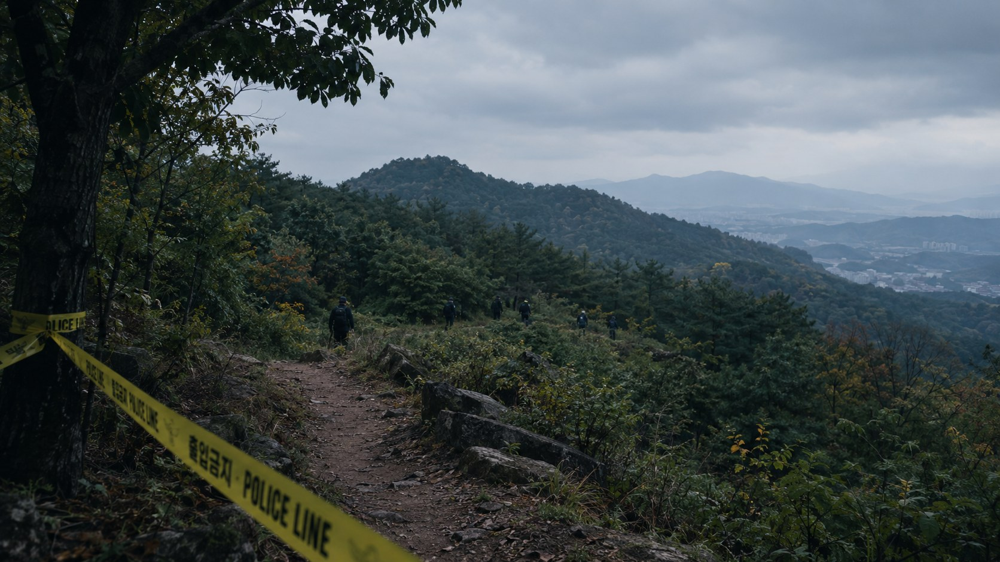

CASE FILE / 01
사건 개요
1991년 대구에서 초등학생 다섯 명이 실종되고, 오랜 시간이 지난 뒤 유해가 발견된 장기 미제 사건이다.

사건의 핵심
일명 ‘개구리소년 사건’은 1991년 3월 26일 대구에서 초등학생 다섯 명의 행방이 끊긴 사건이다. 당시 아이들이 와룡산에 도롱뇽 알 등을 찾으러 갔다는 설명이 널리 알려져 있다. 실종 당일 처음에는 여섯 명이 함께 있었으나, 김태룡 군은 먼저 돌아갔고 나머지 다섯 명이 실종된 것으로 알려져 있다. 다만 사건 당일의 세부적인 이동 경로와 정확한 실종 경위는 확인된 사실과 당시 진술을 구분해 살펴볼 필요가 있다.
무엇이 알려져 있는가
- 실종일은 1991년 3월 26일이다.
- 실종 아동은 다섯 명이다.
- 2002년 와룡산에서 아이들의 유해가 발견되었다.
- 사건의 정확한 경위와 책임자는 공식적으로 밝혀지지 않았다.
무엇을 구분해야 하는가
- 확인된 사실: 실종, 장기간의 수색, 유해 발견, 미해결 상태
- 쟁점: 사망 경위와 유해 주변 정황에 대한 해석
- 추측: 근거가 충분히 확인되지 않은 범인·동기 단정
사건의 경위 요약
1991년 3월 26일, 대구에 거주하던 초등학생 다섯 명이 집을 나선 뒤 실종되었다. 아이들은 인근 와룡산에 도롱뇽 알을 찾으러 갔던 것으로 알려졌으며, 가족과 경찰의 수색에도 행방을 찾지 못했다. 실종 이후 오랜 시간이 흐른 2002년 9월 26일, 와룡산에서 아이들의 유해가 발견되었다. 유해에 대한 감식 과정에서 외부 충격에 의한 손상 가능성이 제기되면서 사건은 단순 실종이 아닌 타살 의혹과 함께 다시 주목받았다. 이후 경찰은 재수사와 증거 분석을 진행했지만, 범행 경위와 범인을 명확하게 밝혀내지 못했다. 살인죄의 공소시효도 2006년 3월 만료되면서 사건은 법적 처벌의 어려움까지 안게 되었으며, 현재까지도 정확한 진실이 밝혀지지 않은 미제 사건으로 남아 있다.